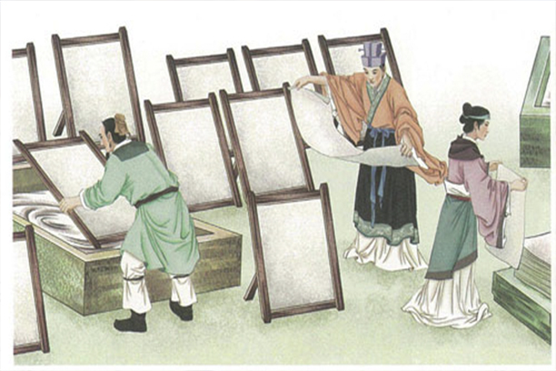
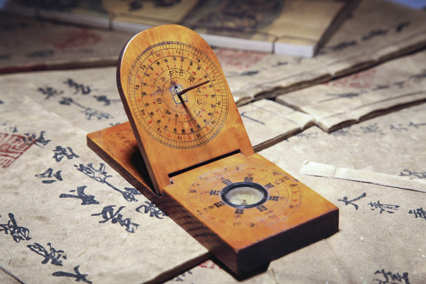
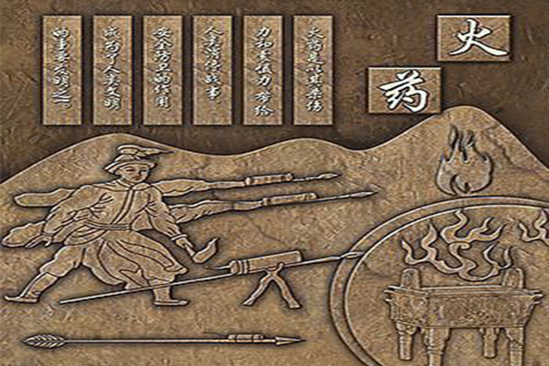
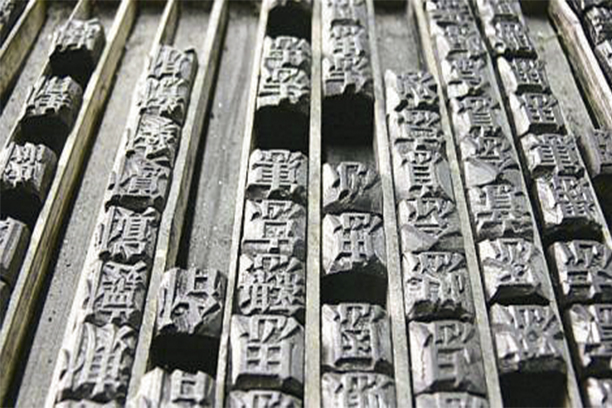

国之强大,民之大福
中国茶文化
“一带一路”沿线半数以上的国家有传统饮茶的习惯， 共同构筑起涵盖44亿人口的超级市场，在2017年我国茶叶出口总量达35.5万吨， 出口至128个国家和地区。
中国丝绸文化
最先使用丝绸的是中亚地区，然后是西欧大陆，最后才是英国。 丝绸用于王公贵族们的日常穿着，书写和绘画材料；装饰宗教圣物； 骑士们将丝绸穿在锁子甲下面，提高穿着舒适度。
四大发明 中国的四大发明在欧洲近代文明产生之前陆续传入西方，对西方科技发展产生一定影响， 印刷术的出现改变了只有僧侣才能读书和受高等教育的状况，便利了文化的传播; 火药和火器的采用摧毁了欧洲中世纪天主教的思想枷锁。指南针传到欧洲航海家的手里， 使他们有可能发现美洲和实现环球航行，为西方奠定了世界贸易和工场手工业发展的基础。 四大发明，在人类科学文化史上留下了灿烂的一页。这些伟大的发明曾经影响并造福于全世界 ，推动了人类历史的前进。
造纸术 
指南针 
 火药
 印刷术
中国瓷器深刻地影响了世界某些国家的政治文明； 曾在某些国家具有“货币”职能，可与人的“生命”等值； 从根本上改变了世界某些国家人民的物质生活方式； 丰富和影响了世界某些国家人民的精神生活。
科举制不仅被东南亚一些国家复制和模仿，也为英、法、美等西方国家所借鉴。 美国学者柯睿格在《哈佛亚洲研究学报》上发表论文说： “以科举考试为核心的中国文官行政制度的创立，是中国对世界的最重要的贡献之一”。 美国汉学家卜德说：“科举制无疑是中国赠予西方的最珍贵的知识礼物”。
科举制度
治国理政